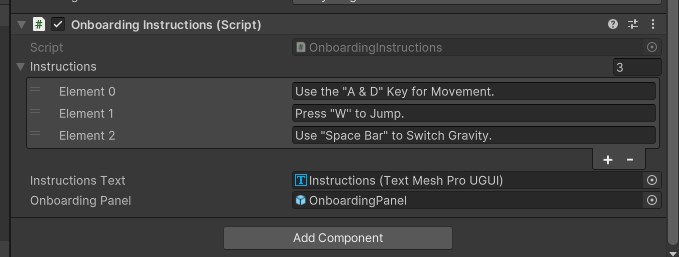
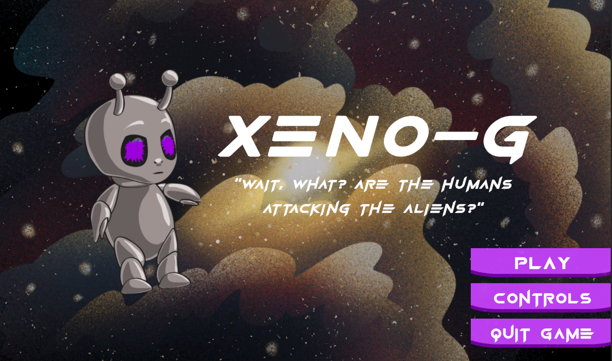
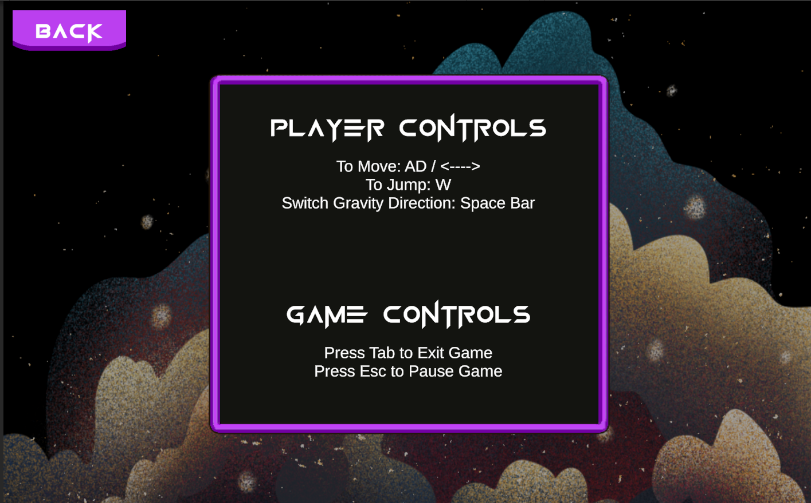

Processes, Reflections, & References





As an alien spy on a space station, use your gravity manipulation powers to outsmart AI traps and navigate obstacles, aiming to reach the library for vital information.
UI/UX Engineer and Gameplay Developer
January 2024 - February 2024
5 members (System Architecture, Level Designer, Narrative Designer, Gameplay Programmer, UI/UX Developer, AI Programming)